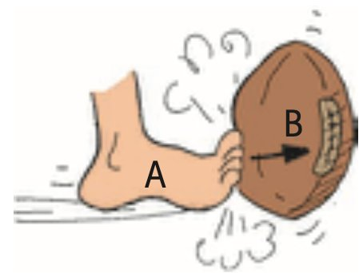
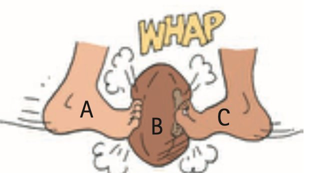
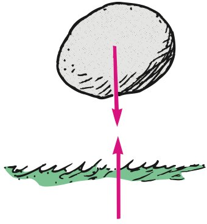
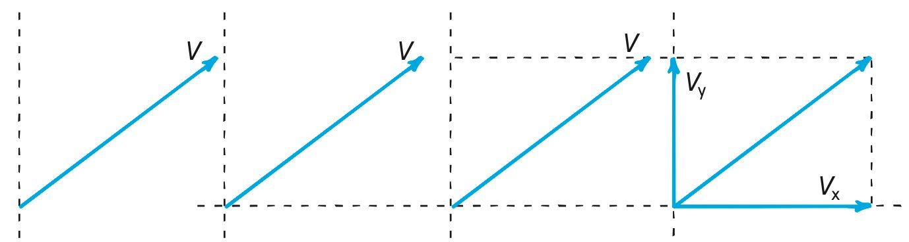
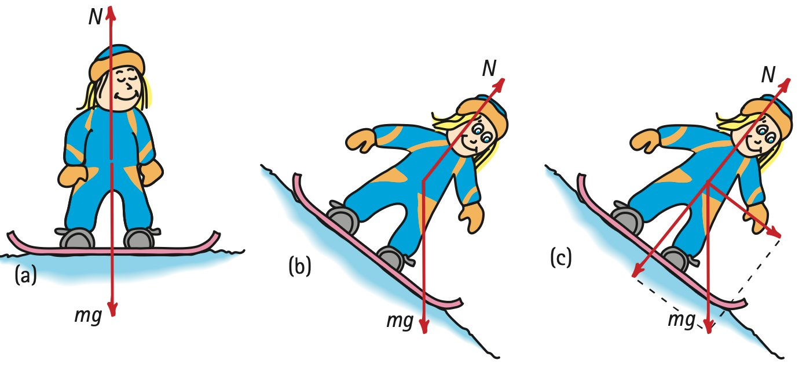

Forces and Interactions
Newton’s Third Law of Motion
Chapter 5
- Forces and Interactions
- Newton’s Third Law of Motion
- Action and Reaction on Different Masses
- Vectors and the Third Law
- Summary of Newton’s Three Laws
1 Darlene Librero pulls with one finger; Paul Doherty pulls with both hands. Who exerts more force on the scale? 2 The racquet cannot hit the ball unless the ball simultaneously hits the racquet—that’s the law! 3 Husband and wife physicists Toby and Bruna Jacobson push on a pair of bathroom scales. Which scale reading is higher? 4 Is Paul touching daughter Gracie, or is Gracie touching her dad? Newton’s third law says both: You cannot touch without being touched.
For almost 20 delightful years I taught Conceptual Physics on Wednesday nights at San Francisco’s Exploratorium, greatly enriched by its founder, Frank Oppenheimer, who frequently sat in my class. When Frank died, another great physicist took his place in classroom visits, Paul Doherty, whom I was proud to have recommended that the Exploratorium hire. Paul Doherty is as personable and likely as brilliant as Frank, and like Frank could teach—really teach! It was my great pleasure to work with these two very special people!
Paul became the Exploratorium’s senior staff scientist. Whenever I was stumped on some physics, Paul was there with answers. His wonderfully deep knowledge of physics accounts for his many awards and was perhaps why he earned his Physics Ph.D. from MIT in only four years.
Paul Doherty is a physicist, teacher, author, and rock climber—excelling at all. He has written numerous articles for Exploratorium publications, mainly the Exploratorium Science Snackbook, valued by science teachers worldwide who love having the “secrets” of Exploratorium exhibits clearly revealed. The common theme of all of Paul’s books is the adventures in physics.
Paul is a consummate showman, performing physics activities at professional meetings both in this country and abroad. He demonstrated the fascination of physics with millions on the Late Show with David Letterman. The photo shows how, after striking the end of an aluminum rod to make it ring, Paul squeezes the rod between his fingers to impose a node and choose a frequency.
Paul’s rock-climbing has taken him beyond frequent Yosemite visits to Tibet and to 20,000-feet-high mountains on the Chile–Argentina border. His lower-altitude activities include doing physics in Antarctica.
How wonderful for our profession that Paul’s talent for teaching extends to his summer Exploratorium Teacher Institute, where he loves to work with physics teachers. Paul beautifully states the link he sees among scientists, teachers, and students: “Scientists look at the world and see things no one else has seen. Teachers help students see things they have never seen. Students ask questions that help teachers see things they have never seen.” Paul Doherty is a physics teacher for all seasons.
5.1 Forces and Interactions
So far we have treated force in its simplest sense—as a push or pull. Yet no push or pull ever occurs alone. Every force is part of an interaction between one thing and another. When you push on a wall with your fingers, more is happening than your push on the wall. You’re interacting with the wall, which also pushes back on you. This is evident in your bent fingers, as illustrated in Figure 5.1. There is a pair of forces involved: your push on the wall and the wall pushing back on you. These forces are equal in magnitude (have the same strength) and opposite in direction, and they constitute a single interaction. In fact, you can’t push on the wall unless the wall pushes back.1


Consider a boxer’s fist hitting a massive punching bag. The fist hits the bag (and dents it) while the bag hits back on the fist (and stops its motion). A pair of forces is involved in hitting the bag. The force pair can be quite large. But what about hitting a piece of tissue paper, as shown in Figure 5.3? The boxer’s fist can exert only as much force on the tissue paper as the tissue paper can exert on the fist. Furthermore, the fist can’t exert any force at all unless what is being hit exerts the same amount of force back. An interaction requires a pair of forces acting on two separate objects.
Other examples: You pull on a rope attached to a cart and acceleration occurs. When you pull, the cart pulls back on you, as evidenced perhaps by the tightening of the rope wrapped around your hand. A hammer hits a stake and drives it into the ground. The stake exerts an equal amount of force on the hammer, which brings the hammer to an abrupt halt. One thing interacts with another—you with the cart, or the hammer with the stake.

Which exerts the force and which receives the force? Isaac Newton’s response was that neither force has to be identified as “exerter” or “receiver”; he concluded that both objects must be treated equally. For example, when you pull on the cart, the cart pulls on you. This pair of forces, your pull on the cart and the cart’s pull on you, makes up the single interaction between you and the cart. Similarly, the pair of forces exerted on the hammer and the stake make up a single interaction. Such observations led Newton to his third law of motion.

Footnotes
1 We tend to think that only living things are capable of pushing and pulling, but inanimate things can do the same. So please don’t be troubled about the idea of the inanimate wall pushing on you. It does, just as another person leaning against you would.
Newton’s Third Law of Motion
5.2 Newton’s Third Law of Motion
Newton’s third law states:
Whenever one object exerts a force on a second object, the second object exerts an equal and opposite force on the first.
We can call one force the action force and the other the reaction force. Then we can express Newton’s third law in the form:
To every action there is always an opposed equal reaction.
It doesn’t matter which force we call action and which we call reaction. The important thing is that they are co-parts of a single interaction and that neither force exists without the other.
When you walk, you interact with the floor. Your feet push against the floor, and the floor pushes against your feet. The two forces occur at the same time (they are simultaneous). Likewise, the tires of a car push against the road while the road pushes back on the tires—the tires and road simultaneously push against each other. In swimming, you interact with the water, pushing the water backward, while the water simultaneously pushes you forward—you and the water push against each other. The reaction forces are what account for our motion in these examples. These forces depend on friction; a person or car on ice, for example, may be unable to exert the action force to produce the needed reaction force. Forces occur in force pairs. Neither force exists without the other.


Defining Your System
An interesting question often arises: Since action and reaction forces are equal and opposite, why don’t they cancel to zero? To answer this question, we must consider the system involved. Consider the system consisting of a single orange in Figure 5.8. The dashed line surrounding the orange encloses and defines the system. The vector that pokes outside the dashed line represents an external force on the system. The system accelerates in accord with Newton’s second law. In Figure 5.9, we see that this force is provided by an apple, which doesn’t change our analysis. The apple is outside the system. The fact that the orange simultaneously exerts a force on the apple, which is external to the system, may affect the apple (another system), but it doesn’t affect the orange. You can’t cancel a force on the orange with a force on the apple. So, in this case, the action and reaction forces don’t cancel.


Now let’s consider a larger system, enclosing both the orange and the apple. We see the system bounded by the dashed line in Figure 5.10. Notice that the force pair is internal to the orange–apple system. Then these forces do cancel each other. They play no role in accelerating the system. A force external to the system is needed for acceleration. That’s where friction with the floor plays a role (Figure 5.11). When the apple pushes against the floor, the floor simultaneously pushes on the apple—an external force on the system. The system accelerates to the right.


Inside a football are trillions and trillions of interatomic forces at play. They hold the ball together, but they play no role in accelerating the ball. Although every one of the interatomic forces is part of an action–reaction pair within the ball, they combine to zero, no matter how many of them there are. A force external to the football, like a kick, is needed to accelerate it. In Figure 5.12, we note a single interaction between the foot and the football.

The football in Figure 5.13, however, does not accelerate. In this case, there are two interactions occurring—two forces acting on the football. If they are simultaneous, equal, and opposite, then the net force is zero. Do the two opposing kicks make up an action–reaction pair? No, because they act on the same object, not on different objects. They may be equal and opposite, but, unless they act on different objects, they are not an action–reaction pair. Get it?
If this is confusing, it may be well to note that Newton had difficulties with the third law himself. (See insightful examples of Newton’s third law in the Practicing Physics Book.)

Action and Reaction on Different Masses
5.3 Action and Reaction on Different Masses
As strange as it may first seem, a falling object pulls upward on Earth with as much force as Earth pulls downward on the object. The resulting acceleration of the falling object is evident, while the upward acceleration of Earth is too small to detect. So, strictly speaking, when you step off a curb, the street rises ever so slightly to meet you.

We can see that Earth accelerates slightly in response to a falling object by considering the exaggerated examples of two planetary bodies, parts (a) through (e) in Figure 5.15. The forces between bodies A and B are equal in magnitude and oppositely directed in each case. If the acceleration of planet A is not noticeable in (a), then it is more noticeable in (b), where the difference between the masses is less extreme. In (c), where both bodies have equal mass, the acceleration of object A is as evident as it is for B. Continuing, we see that the acceleration of A becomes even more evident in (d) and even more so in (e).

The role of different masses is evident in a fired cannon. When a cannon is fired, there is an interaction between the cannon and the cannonball (Figure 5.16). A pair of forces acts on both cannon and cannonball. The force exerted on the cannonball is as great as the reaction force exerted on the cannon; hence, the cannon recoils. Since the forces are equal in magnitude, why doesn’t the cannon recoil with the same speed as the cannonball?

When we analyze changes in motion, Newton’s second law reminds us that we must also consider the masses involved. Suppose we let F represent both the action and reaction forces, m the mass of the cannonball, and M the mass of the much more massive cannon. The accelerations of the cannonball and the cannon are then found by comparing the ratios of force to mass:
Cannonball: F/m = a
Cannon: F/M = a
This shows why the change in velocity of the cannonball is so large compared with the change in velocity of the cannon. A given force exerted on a small mass produces a large acceleration, while the same force exerted on a large mass produces a small acceleration.
In the example of the falling object, if we used similarly exaggerated symbols to represent the acceleration of Earth reacting to a falling object, the symbol M for the Earth’s mass would be astronomical in size. The force F due to gravity of the falling object divided by this large mass would result in a microscopic a to represent the acceleration of Earth toward the falling object.

We can extend the idea of a cannon recoiling from the ball it fires to understand rocket propulsion. Consider an inflated balloon recoiling when air is expelled (Figure 5.17). If the air is expelled downward, the balloon accelerates upward. The same principle applies to a rocket, which continuously “recoils” from the ejected exhaust gas. Each molecule of exhaust gas is like a tiny cannonball shot from the rocket (Figure 5.18).

A common misconception is that a rocket is propelled by the impact of exhaust gases against the atmosphere. In fact, before the advent of rockets, it was generally thought that sending a rocket to the Moon was impossible. Why? Because there is no air above Earth’s atmosphere for the rocket to push against. But this is like saying a cannon wouldn’t recoil unless the cannonball had air to push against. Not true! Both the rocket and the recoiling cannon accelerate because of the reaction forces exerted by the material they fire—not because of any pushes on the air. In fact, a rocket operates better above the atmosphere where there is no air resistance.
Using Newton’s third law, we can understand how a helicopter gets its lifting force. The whirling blades are shaped to force air particles down (action), and the air forces the blades up (reaction). This upward reaction force is called lift. When lift equals the force due to gravity on the aircraft, the helicopter hovers in midair. When lift is greater, the helicopter climbs upward.
This is true for birds and airplanes. Birds fly by pushing air downward. The air in turn pushes the bird upward. When the bird is soaring, the wings must be shaped so that moving air particles are deflected downward. Slightly tilted wings that deflect oncoming air downward produce lift on an airplane. Air that is pushed downward continuously maintains lift. This supply of air is obtained by the forward motion of the aircraft, which results from propellers or jets that push air backward. The air, in turn, pushes the propellers or jets forward. We will learn in Chapter 14 that the curved surface of a wing is an airfoil, which enhances the lifting force.
We see Newton’s third law at work everywhere. A fish pushes the water backward with its fins, and the water pushes the fish forward. When the wind pushes against the branches of a tree and the branches push back on the wind, we have whistling sounds. Forces are interactions between different things. Every contact requires at least a twoness; there is no way that an object can exert a force on nothing. Forces, whether large shoves or slight nudges, always occur in pairs, each of which is opposite to the other. Thus, we cannot touch without being touched.
Figure 5.19 was omitted because no matching captured image was supplied. Caption: Author and wife Lil demonstrate Newton’s third law: You cannot touch without being touched.
Figure 5.20 was omitted because no matching captured image was supplied. Caption: The bricks were originally straight. Do you see the evidence for cars pushing backward on the road as they accelerate forward? Or pushing forward on the road as they brake?
Practicing Physics: Tug-of-War
Perform a tug-of-war between guys and gals. Do it on a polished floor that’s somewhat slippery, with guys wearing socks and gals wearing rubber-soled shoes. Who will surely win, and why? (Hint: Who wins a tug-of-war: those who pull harder on the rope or those who push harder against the floor?)

Vectors and the Third Law
5.4 Vectors and the Third Law
Just as a pair of vectors at right angles can be combined into one resultant vector, any vector can be resolved into two component vectors perpendicular to each other. These two vectors are known as the components of the given vector they replace (Figure 5.21). The process of determining the components of a vector is called resolution. Any vector drawn on a piece of paper can be resolved into a vertical and a horizontal component.

Vector resolution is illustrated in Figure 5.22. A vector V is drawn in the proper direction to represent a vector quantity. Then vertical and horizontal lines (axes) are drawn at the tail of the vector. Next, a rectangle is drawn that has V as its diagonal. The sides of this rectangle are the desired components, vectors Vx and Vy. In reverse, note that the vector sum of vectors Vx and Vy is V.


In previous chapters we used vectors to depict weight and normal forces for objects on supporting surfaces. When a surface is horizontal and only gravity acts on an object, the normal force exerted by the surface has the same magnitude as mg, the force due to gravity. Snowboarder Nellie Newton illustrates this in Figure 5.23a. Newton’s third law is evident as Nellie’s weight mg is the force she exerts against the surface, while the reaction is the surface exerting an equal and opposite force N on Nellie.
Suppose, however, that Nellie is on an inclined surface, a hill (Figure 5.23b). Vector mg is vertical and acts downward, with only a component of mg pressing against the surface. So the normal force N is less. If, for example, the surface were vertical, no pressing would occur and N would be zero.
Note another thing. The component of mg perpendicular to the surface has the same magnitude as N (Figure 5.23c). Note also that Nellie’s acceleration down the hill is due to the component of mg that is parallel to the hill’s surface. For steeper hills, this component of mg and her acceleration would be greater. If the surface were vertical, acceleration would be a full g and Nellie would be in free fall! A block of ice on various friction-free inclines illustrates this diminishing of N for steeper slopes (Figure 5.24).

In Figure 5.25 we see three views of a shoe on an incline, first on a friction-free surface where only two forces act on the shoe (Figure 5.25a). When friction is involved, an additional vector f represents the force of friction (Figure 5.25b). Of interest is whether the amount of friction is less than or equal to the resultant of N and mg (Figure 5.25c). If f is less than the resultant, the shoe will accelerate down the ramp. If f is equal to the resultant, the shoe will be in equilibrium—which can mean either at rest or, given a nudge, sliding down the incline at constant velocity. Perhaps in the lab part of your course you’ll play around with these ideas.

In Figure 5.26 we see Monkey Mo suspended at rest in a zoo by holding on to a rope with one hand and the side of the cage with the other. Application of the parallelogram rule shows that the tension T in the rope is greater than mg. Note that the sideways pull S on the cage is less than mg. Although not indicated in the figure, can you see that S is equal to the horizontal component of T? And that mg is equal to the vertical component of T? Analyzing forces in terms of vectors and their components is nicely instructive.

Figure 5.27 illustrates vector components for velocity. In the absence of air resistance, the horizontal component of velocity remains constant, in accord with Newton’s first law. In contrast, the vertical component is under the influence of gravity and lessens with upward motion and gains what it lost in downward motion.

We’ll return to vector components of velocity when we treat projectile motion in Chapter 10.
Summary of Newton’s Three Laws
5.5 Summary of Newton’s Three Laws
Newton’s first law, the law of inertia: An object at rest tends to remain at rest; an object in motion tends to remain in motion at constant speed along a straight-line path. This property of objects to resist change in motion is called inertia. Mass is a measure of inertia. Objects will undergo changes in motion only in the presence of a net force.
Newton’s second law, the law of acceleration: When a net force acts on an object, the object will accelerate. The acceleration is directly proportional to the net force and inversely proportional to the mass. Symbolically, a = F/m. Acceleration is always in the direction of the net force. When objects fall in a vacuum, the net force is simply the pull of gravity—and the acceleration is g (the symbol g denotes that acceleration is due to gravity alone). When objects fall in air, the net force is equal to gravity’s pull minus the force of air resistance, and the acceleration is less than g. If and when the force of air resistance equals the gravitational force on a falling object, acceleration terminates, and the object falls at constant speed (called terminal speed).
Newton’s third law, the law of action–reaction: Whenever one object exerts a force on a second object, the second object exerts an equal and opposite force on the first. Forces occur in pairs, one action and the other reaction, which together constitute the interaction between one object and the other. Action and reaction always occur simultaneously and act on different objects. Neither force exists without the other.
Isaac Newton’s three laws of motion are rules of nature that enable us to see how beautifully so many things connect with one another. We see these rules in operation in our everyday environment.

Textbook Sections: 5.1–5.5
Learning Target: Students will identify force interactions and explain Newton’s Third Law using action-reaction pairs that act on different objects.
- I can explain that forces occur as interactions between objects.
- I can identify the action and reaction forces in common situations.
- I can explain why action-reaction forces are equal in strength and opposite in direction.
- I can explain why action-reaction forces do not cancel when they act on different objects.
- I can define a system and decide whether a force is internal or external to that system.